先備：要複製一段 DNA 需要什麼
- 生物科技就是把 4-1～4-4 學到的分子工具拿來用。先複習 4-2 的 DNA 複製需要哪些東西：
基因放大（一）：在細菌裡複製
- 基因放大技術：快速、大量複製任何一段 DNA 的方法，可以在活體或試管內進行。
- 活體：把基因接到質體（細菌中獨立於染色體外的小環狀 DNA）上，質體能在細菌體內自己複製；細菌分裂又快 → 基因跟著大量複製。
基因放大（二）：PCR
- 1987年，穆勒斯發展出聚合酶連鎖反應（PCR）：在試管中快速、大量複製某一特定 DNA 片段。
- 試管裡沒有解旋酶，改用加熱把雙股拆開；但一般的 DNA 聚合酶遇熱會失去活性 → 需要耐高溫的聚合酶。
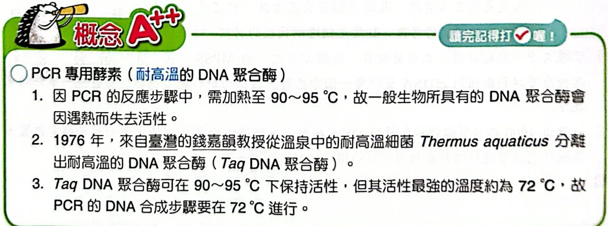
PCR 專用的耐高溫 DNA 聚合酶：1976 年錢嘉韻教授從溫泉細菌 Thermus aquaticus 分離出 Taq 聚合酶原講義PDF第30頁・印刷第138頁・點圖放大
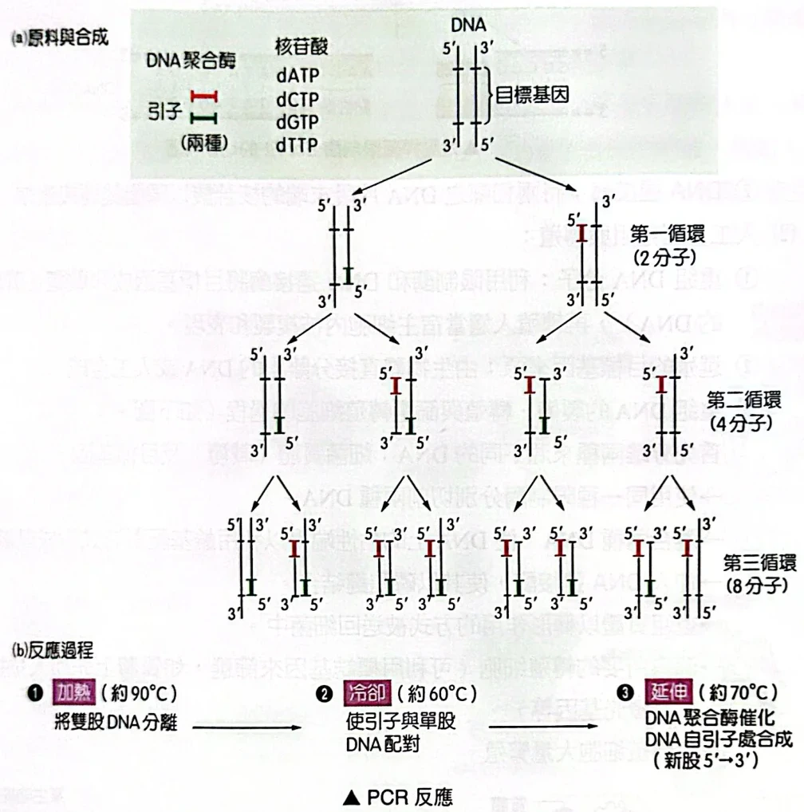
PCR：每一循環（加熱→冷卻→延伸）DNA 數目加倍，1→2→4→8原講義PDF第31頁・印刷第139頁・點圖放大
- 每一循環 DNA 數目加倍：1 → 2 → 4 → 8…；做 n 次循環，理論上變成原來的 2n 倍（10 次就是 210≈1000 倍）。
重組 DNA：限制酶與連接酶
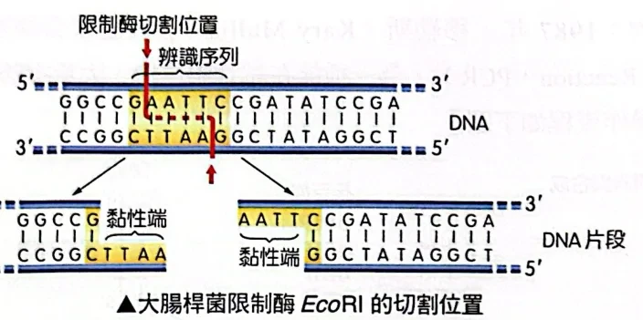
限制酶 EcoRI 辨識 5′-GAATTC-3′，在 G 與 A 之間切開，兩邊各留下 AATT 的單股「黏性端」原講義PDF第32頁・印刷第140頁・點圖放大
- 例：大腸桿菌的 EcoRI 辨識 5′-GAATTC-3′（另一股從 5′ 讀也是 GAATTC → 對稱），在 G 和 A 之間切。
- 兩股的切點錯開 → 切口留下一小段單股 AATT，叫黏性端。用同一種限制酶切兩種 DNA，黏性端剛好互補，能靠氫鍵黏在一起。
重組 DNA 的完整流程
- 重組 DNA 分子：用限制酶和連接酶把目標基因放進載體（質體或病毒的 DNA），再送進宿主細胞複製和表現。
- 目標基因的來源：直接從生物體分離，或人工合成。
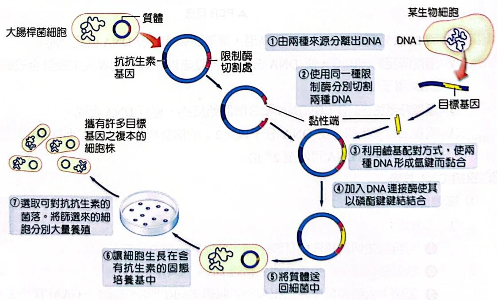
重組 DNA 的製備與篩選：①分離兩種 DNA ②同一種限制酶切割 ③黏性端配對 ④連接酶接合 ⑤送回細菌 ⑥抗生素培養基篩選 ⑦大量培養原講義PDF第32頁・印刷第140頁・點圖放大
基因轉殖：細菌、植物、動物
- 基因轉殖技術：用基因工程把遺傳物質送進活細胞或生物體，產生基因改造。不包括傳統育種、細胞融合、原生質融合、雜交、誘變、體外受精、體細胞變異及染色體倍增（這些都沒有把特定外源基因放進去）。
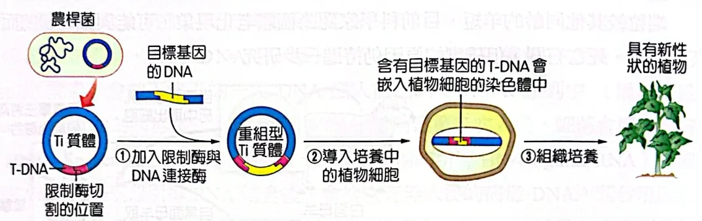
農桿菌的 Ti 質體：目標基因接進 T-DNA，導入植物細胞後嵌入染色體，再組織培養成植株原講義PDF第33頁・印刷第141頁・點圖放大
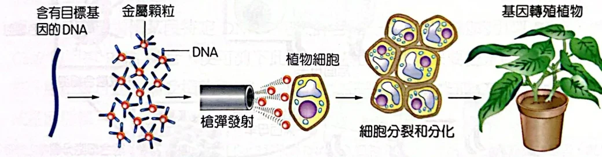
基因槍：把包著 DNA 的金屬顆粒射進植物細胞原講義PDF第33頁・印刷第141頁・點圖放大
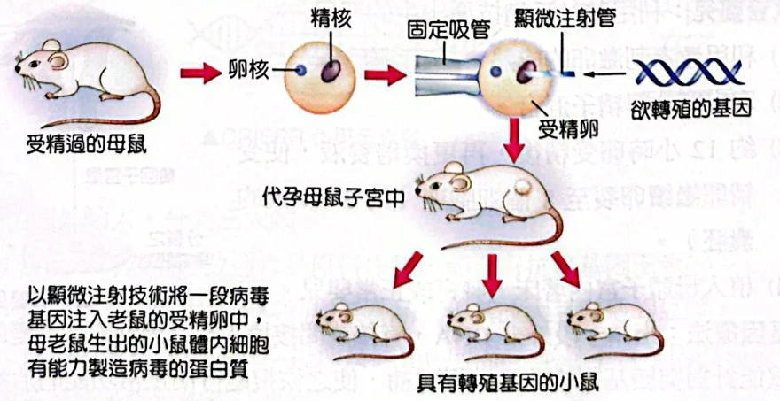
1981 年以顯微注射製備基因轉殖鼠：把基因注入受精卵的細胞核，再放回代孕母鼠原講義PDF第33頁・印刷第141頁・點圖放大
安全評估與人類基因體計畫
- 基因改造產品的安全評估：在臺灣由國科會、農業部、衛生福利部把關，評估兩方面：
- 會不會干擾人體代謝、影響健康。
- 會不會衝擊環境生態。
經典演練：PCR 題組 1–4
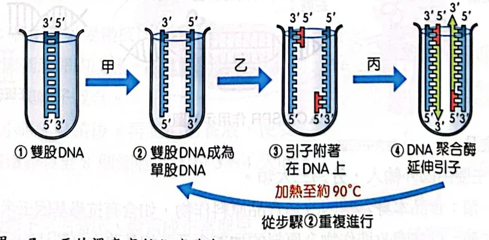
演練1–4附圖：PCR 模式圖，甲、乙、丙為三種溫度的處理步驟原講義PDF第34頁・印刷第144頁・點圖放大
甲、乙、丙的溫度高低依序為何？
(A) 甲＞乙＞丙 (B) 甲＞丙＞乙 (C) 乙＞丙＞甲 (D) 甲＝丙＞乙
看答案與詳解收起
答B。
解- 看圖判斷步驟：甲之後雙股變單股 → 加熱變性（約 90 °C）。乙之後引子附著 → 冷卻黏合（約 60 °C）。丙之後 DNA 聚合酶延伸引子 → 延伸（約 70～72 °C）。
- 排序：甲（90）＞丙（72）＞乙（60）。
- (D) 錯：圖下方另寫「加熱至約 90 °C 從步驟②重複」，那是回到甲的溫度，不是丙。
在丙步驟的溫度下進行引子延長的反應，需要加入何種酵素？
看答案與詳解收起
答耐高溫的 DNA 聚合酶（例如 Taq DNA 聚合酶）。
解- 延長新股＝把去氧核苷酸接到引子的 3′ 端 → 需要 DNA 聚合酶。
- 每個循環都要加熱到 90 °C，一般生物的聚合酶會變性失活；Taq 聚合酶來自溫泉細菌，耐高溫，且在 72 °C 活性最強。
小結PCR 只需要一種酵素：耐熱 DNA 聚合酶。
若有充足的引子、酵素和原料供應，則欲得到十億個以上的目標基因複製本，至少需要進行幾次的複製？
看答案與詳解收起
答30 次（以一個目標 DNA 起算）。
解- 每循環加倍：n 次後有 2n 個。
- 要 2n ≥ 109。
- 210＝1024≈103 → 230＝(210)3≈1.07×109 ✓；229≈5.4×108，還不到十億 ✗。
- 所以至少 30 次。
小結記住 2¹⁰≈1000：每 10 次循環多 1000 倍。
回答有關 DNA 複製的問題（以代號作答）：
a.限制酶 b.胺基酸 c.tRNA d.核糖體 e.能量 f.去氧核糖核苷酸 g.核糖核苷酸 h.NADPH i.DNA 聚合酶 j.RNA 聚合酶 k.DNA ℓ.DNA 引子 m.RNA 引子 n.DNA 連接酶 o.解旋酶
- 細胞內 DNA 複製需要上列哪些項目參與？
- PCR 反應中需要上列哪些項目參與？
看答案與詳解收起
答(1) e、f、i、k、m、n、o；(2) e、f、i、k、ℓ。
解(1) 細胞內：模版 DNA（k）、原料去氧核糖核苷酸（f，以三磷酸形式同時提供能量 e）、解旋酶拆開雙股（o）、RNA 引子當起點（m）、DNA 聚合酶延長（i）、DNA 連接酶接岡崎片段（n）。
(2) PCR：模版 k、原料 f、能量 e、人工合成的 DNA 引子（ℓ）、耐熱 DNA 聚合酶（i）。不用解旋酶（改用加熱）、不用連接酶（沒有要接的片段）、引子是 DNA 不是 RNA。
不選的：a 限制酶是剪 DNA 的；b、c、d 是轉譯用的；g、j 是轉錄用的（RNA 引子雖由導引酶合成，但選項沒有導引酶）；h 是光合作用的。
小結PCR＝模版＋DNA 引子＋dNTP＋耐熱聚合酶；細胞內多了解旋酶、RNA 引子、連接酶。
經典演練：試管嬰兒題組 5–8
關於試管嬰兒的敘述，下列何者正確？
(A) 屬於遺傳工程 (B) 無性生殖 (C) 不需受精 (D) 母體子宮發育
看答案與詳解收起
答D。
解- 試管嬰兒：卵和精子在體外結合成受精卵，再植回母親子宮發育 → (D) 對。
- (B)(C) 錯：有精卵受精，屬有性生殖。
- (A) 錯：沒有把外源基因剪接、轉殖進去，只是在體外受精（基因轉殖的定義也明列不包括體外受精）。
臺大生殖醫學團隊應用了哪些生物技術使這對夫婦生下健康寶寶？（多選）
(A) 基因轉殖技術 (B) 基因放大技術 (C) 離體培養 (D) 臍帶血幹細胞移植 (E) 絨毛膜採樣、分析
看答案與詳解收起
答BCE。
解- (B) ✓：WGA（全基因體放大術）就是把胚胎細胞微量的 DNA 大量複製後再檢測。
- (C) ✓：精卵在體外結合，受精卵在體外培養到能檢測、植入。
- (E) ✓：懷孕 11 週做絨毛膜採樣，再次確認。
- (A) ✗：沒有放入外源基因。
- (D) ✗：臍帶血移植是寶寶出生後用來救哥哥，不是讓夫婦生下健康寶寶的技術。
小結看清楚問的是「讓夫婦生下健康寶寶」用到的技術。
若以 A 表示正常基因，a 表示地中海貧血症基因，則有關這位健康寶寶的基因型與父母親相同的機率是多少？
看答案與詳解收起
答2/3。
解- 父母都是攜帶者 Aa × Aa → 子代 AA：Aa：aa＝1：2：1。
- 寶寶已確定沒有地中海貧血（篩選過）→ 只看 AA、Aa，共 3 份。
- 和父母相同（Aa）占 2 份 → 2/3。
若已知親兄弟姐妹之間，HLA 相符合的機率為 1/4，則這對夫婦欲自然受孕而生下可以救哥哥且不患病的健康寶寶，其機率為多少？
看答案與詳解收起
答3/16。
解- 不患病（AA 或 Aa）：3/4。
- HLA 和哥哥相符：1/4。
- 兩件事都要成立，且 HLA 基因與地中海貧血基因在不同染色體上、彼此獨立 → 相乘：3/4×1/4＝3/16。
- 機率不到 1/5，這就是醫院要用 WGA 先挑胚胎的原因。
經典演練：限制酶與親子鑑定 9–11
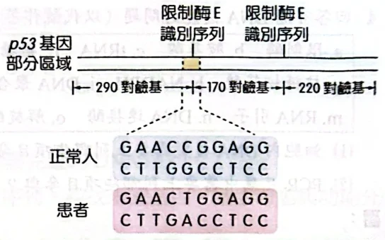
演練9–10附圖：p53 基因部分區域的兩個限制酶 E 識別序列（CCGG），以及正常人與患者在第一個切點的序列原講義PDF第36頁・印刷第146頁・點圖放大
已知限制酶 E 識別序列為 CCGG，若用此酵素完全切割患者 p53 基因部分區域（如上圖），則將被切割成長度為多少的 DNA 片段？
看答案與詳解收起
答460 對鹼基與 220 對鹼基兩段。
解- 正常人有兩個 CCGG 切點，把這段切成 290、170、220 三段。
- 患者在第一個切點的序列是 GAACTGGAGG：CCGG 變成 CTGG → 限制酶 E 認不得、不切。
- 少了第一刀，前兩段連在一起：290＋170＝460；第二刀照切，剩下 220。
小結突變破壞辨識序列 → 少一刀 → 相鄰兩段相加。
若某人 p53 基因部分區域經限制酶 E 完全切割後，共出現 170、220、290 和 460 四種鹼基對片段，則推論此人的基因型為何（以 p+ 表示正常 p53 基因，p− 表示異常基因）？
看答案與詳解收起
答p+p−（異型合子）。
解- 正常基因 p+ 切出：290、170、220。
- 異常基因 p− 切出：460、220。
- 同時出現 170、290（只有 p+ 會有）和 460（只有 p− 會有）→ 兩種基因都有 → p+p−。
X 女為了確認孩子的親生父親究竟是甲、乙或丙，於是做了 DNA 親子鑑定如右圖，圖中的小橫線稱為 DNA 條帶，下列敘述何者正確？（多選）
(A) 圖中的條帶代表 DNA 上的基因序列 (B) 要製作該資料必須先萃取其 DNA，並用聚合酶連鎖反應（PCR）擴增 DNA 數量 (C) 該資料中不同的條帶是限制酶作用造成 (D) 製作該條帶時，DNA 片段必須放在電場的正極 (E) 乙最可能是孩子的親生父親
看答案與詳解收起
答BCE。
解- (A) ✗：每條帶是一段長度特定的 DNA 片段，表示它跑到的位置，並不是基因序列本身。
- (B) ✓：先萃取 DNA；樣本量少時用 PCR 放大到足夠的量。
- (C) ✓：用限制酶切 DNA，不同人的切點不同 → 片段長度不同 → 條帶位置不同。
- (D) ✗：DNA 帶負電，要放在負極端，往正極跑。
- (E) ✓：孩子有 6 條帶（由上數第1、2、4、5、8、10 列），其中第1、5 列和 X 女相同（來自母親）；其餘第2、4、8、10 列必須來自父親 → 只有乙四條全有（甲、丙都缺）。
原頁沒有附答案；B、C 是以本講義教的「限制酶切割＋電泳」方法來判斷。
小結親子鑑定：扣掉和母親相同的條帶，剩下的都要在生父身上找到。
探討活動：DNA 粗萃取與 PCR、電泳
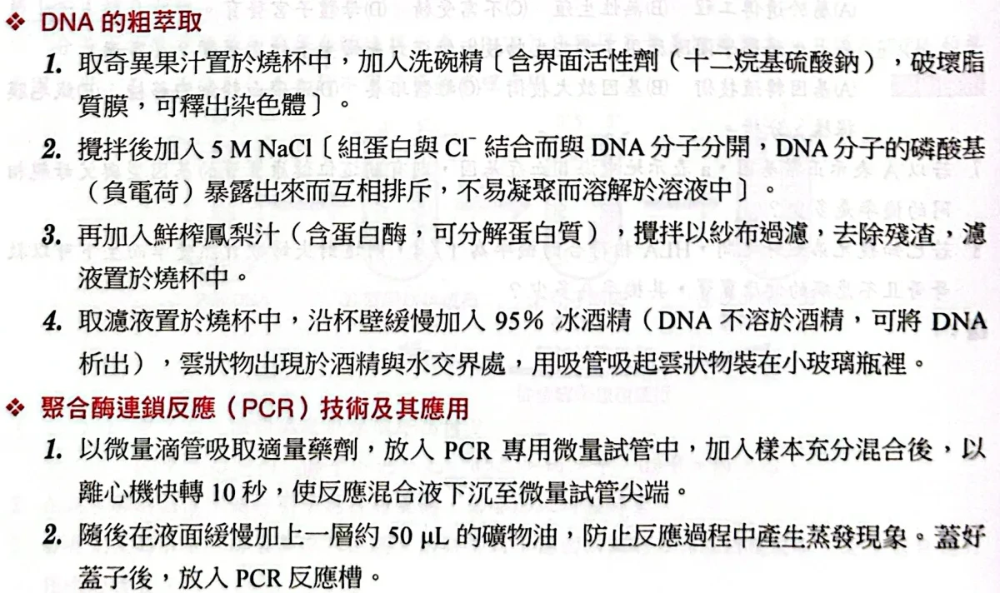
探討活動：DNA 粗萃取步驟與 PCR 操作的前兩步原講義PDF第36頁・印刷第146頁・點圖放大
探討活動演練 1–3
下列有關 DNA 萃取的敘述，何者正確？
(A) 從洋蔥與大腸桿菌中萃取出的 DNA 由不同種類的核苷酸組成 (B) 清潔劑的作用為使細胞破裂，但洋蔥細胞具細胞壁因此清潔劑沒用 (C) 萃取洋蔥的 DNA 時，使用木瓜酵素去除細胞壁 (D) 從洋蔥葉片與莖中可萃取出具相同序列的 DNA
看答案與詳解收起
答D。
解- (A) ✗：所有生物的 DNA 都由同樣 4 種去氧核糖核苷酸（A、T、G、C）組成，不同的是排列順序。
- (B) ✗：清潔劑破壞的是細胞膜、核膜（脂質膜）；細胞壁可以靠搗碎、研磨打破，清潔劑仍然必要。
- (C) ✗：木瓜酵素和鳳梨汁一樣是蛋白酶，用來分解蛋白質，不是去除細胞壁（細胞壁主要是纖維素）。
- (D) ✓：同一株洋蔥的細胞都由同一個受精卵經有絲分裂而來，DNA 序列相同（不同部位只是表現的基因不同）。
小結同一個體各部位 DNA 相同；清潔劑破膜、蛋白酶去蛋白。
下列最合理的實驗步驟順序為何者？
(A) ①④②③⑥⑤⑦ (B) ①⑤④②⑥③⑦ (C) ①②④⑥③⑤⑦ (D) ①⑤③⑥④②⑦
看答案與詳解收起
答A。
解- ①先打破細胞、分離出病毒甲。
- ④病毒是「蛋白殼＋核酸」，先用蛋白質分解酵素去掉殼體，核酸才露出來。
- ②再用酒精把 RNA 沉澱下來收集（核酸不溶於酒精）。
- ③定序與比對常用 DNA，所以把 RNA 反轉錄成 DNA。
- ⑥加入 DNA 聚合酶反應（如 PCR）大量複製。
- ⑤純化 DNA。
- ⑦分析序列。→ ①④②③⑥⑤⑦。
其他選項都在 RNA 還沒出現前就要「純化 DNA」(⑤)，或在轉成 DNA 前就做 DNA 聚合酶反應，不合理。
小結順序：取出 → 去殼 → 收核酸 → RNA 轉 DNA → 放大 → 純化 → 定序。
如果病毒乙的遺傳物質為 DNA，則相同的實驗可去除下列哪一項步驟？
(A) ② (B) ③ (C) ④ (D) ⑥
看答案與詳解收起
答B。
解- 步驟③「將 RNA 轉為 DNA」是因為病毒甲的遺傳物質是 RNA。
- 病毒乙本來就是 DNA → 不需要反轉錄 → 可去除③。
- ②（酒精沉澱核酸）對 DNA 一樣需要；④去蛋白殼、⑥放大也都還要做。
小結RNA → DNA 這一步只有 RNA 病毒才需要。
本篇整理
第 4 單元的正課到這裡結束。單元練習題（PDF38–52，滿貫強試出擊＋歷屆考題）之後再另做成一篇。
核對原講義全頁（生物2 PDF30–37）
本節對應印刷138下半–147頁：概念5 生物科技、探討活動，以及兩組經典演練2.0（概念5的素養混合題1–11、探討活動的演練1–3）。注意：掃描檔在PDF33（印刷141）之後直接接PDF34（印刷144），印刷142–143頁沒有收進PDF，概念5第4～9點的前半（例如複製動物、基因改造食品的說明）因此缺漏，本頁只依現有頁面編寫，沒有自行補寫缺頁內容。PDF38起是單元4練習題。原頁沒有附答案，本頁答案依題幹與正文逐題推導。
 PDF第30頁／印刷第138頁
PDF第30頁／印刷第138頁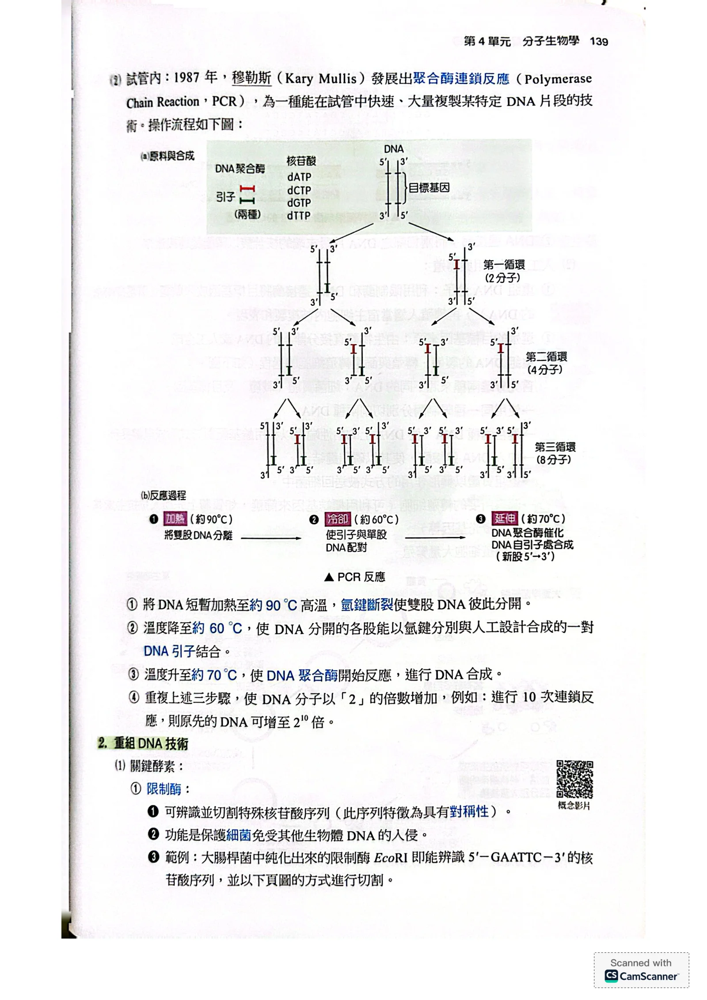
PDF第31頁／印刷第139頁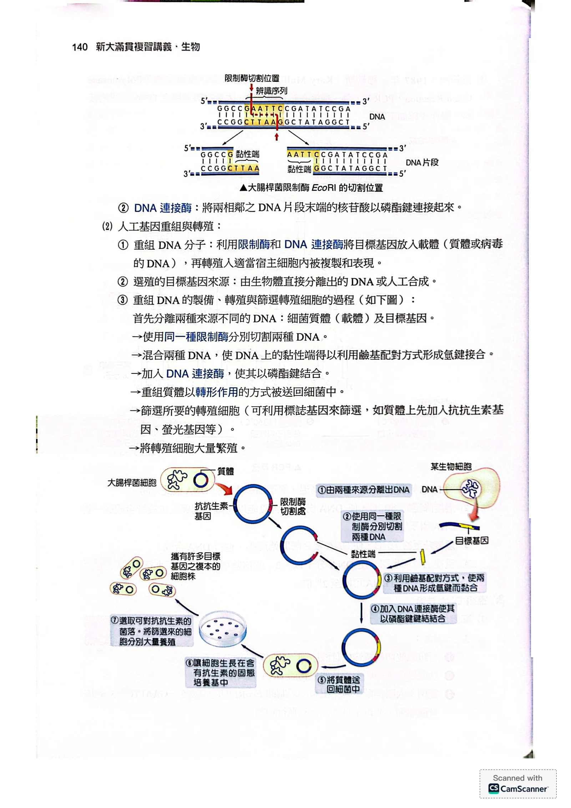
PDF第32頁／印刷第140頁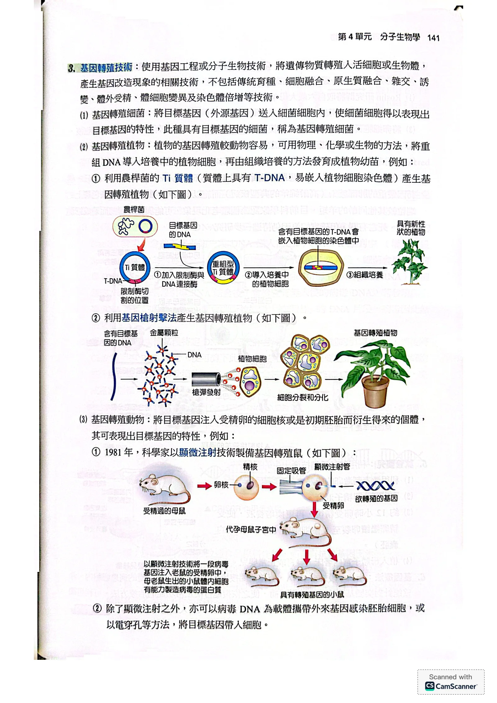
PDF第33頁／印刷第141頁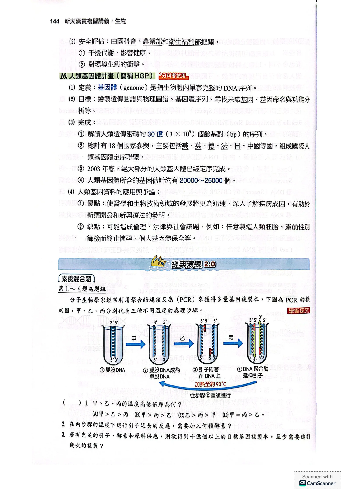
PDF第34頁／印刷第144頁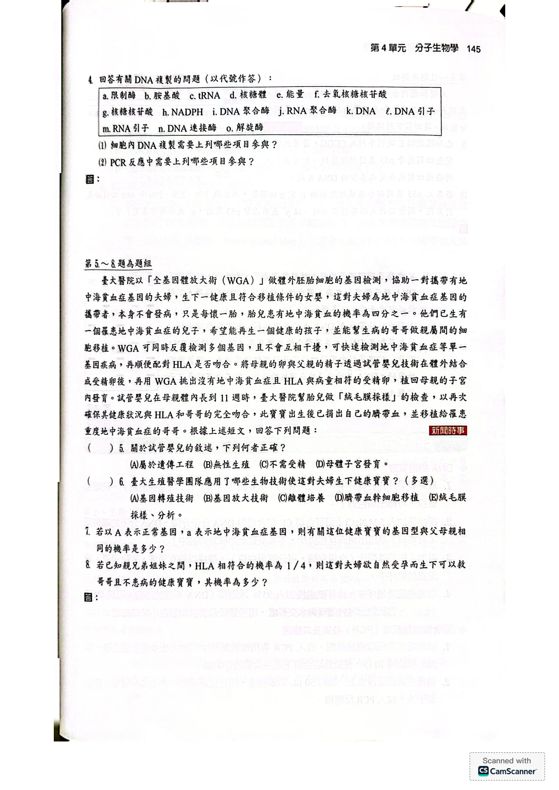
PDF第35頁／印刷第145頁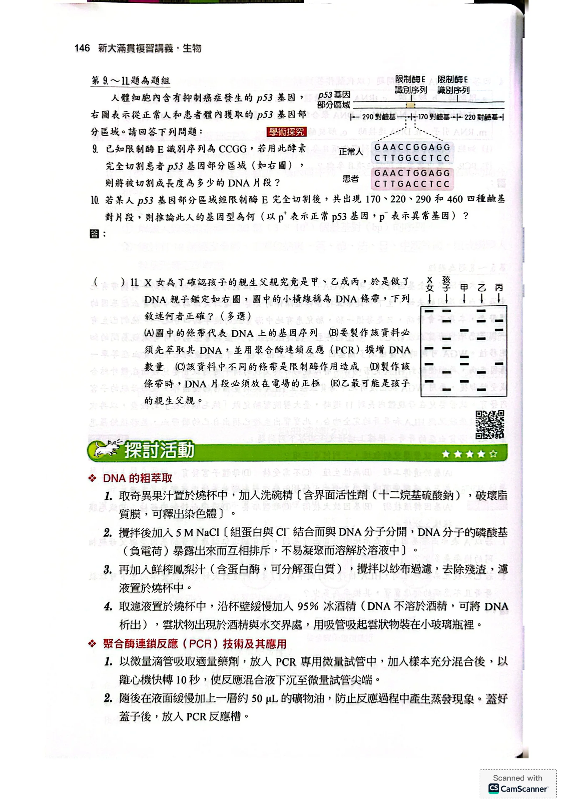
PDF第36頁／印刷第146頁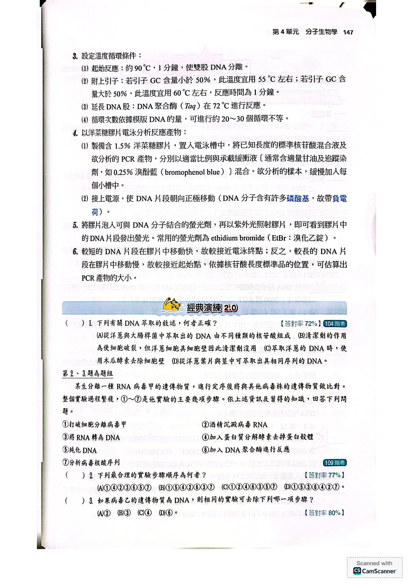
PDF第37頁／印刷第147頁